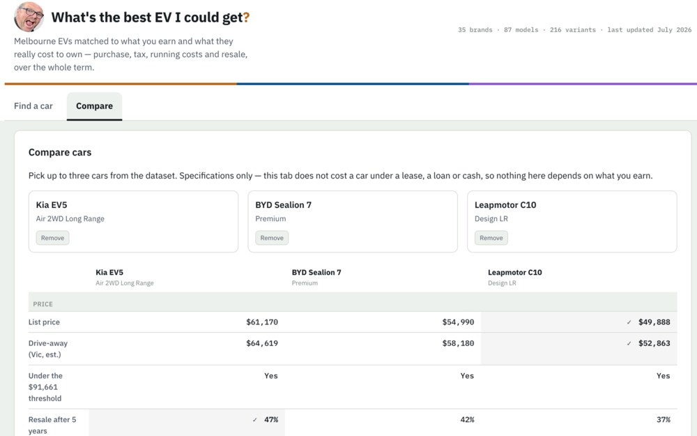
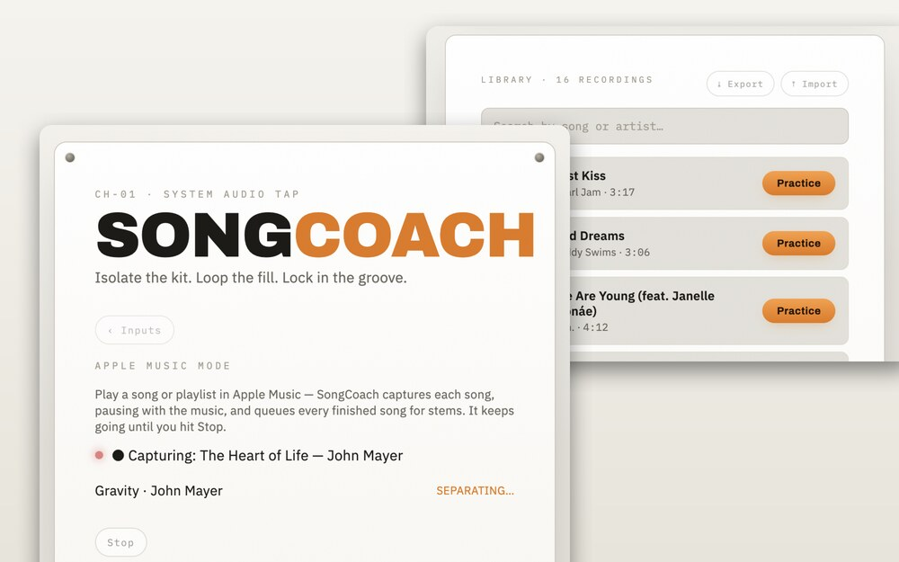
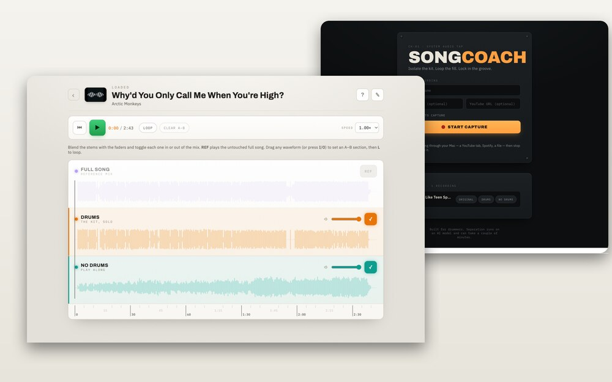
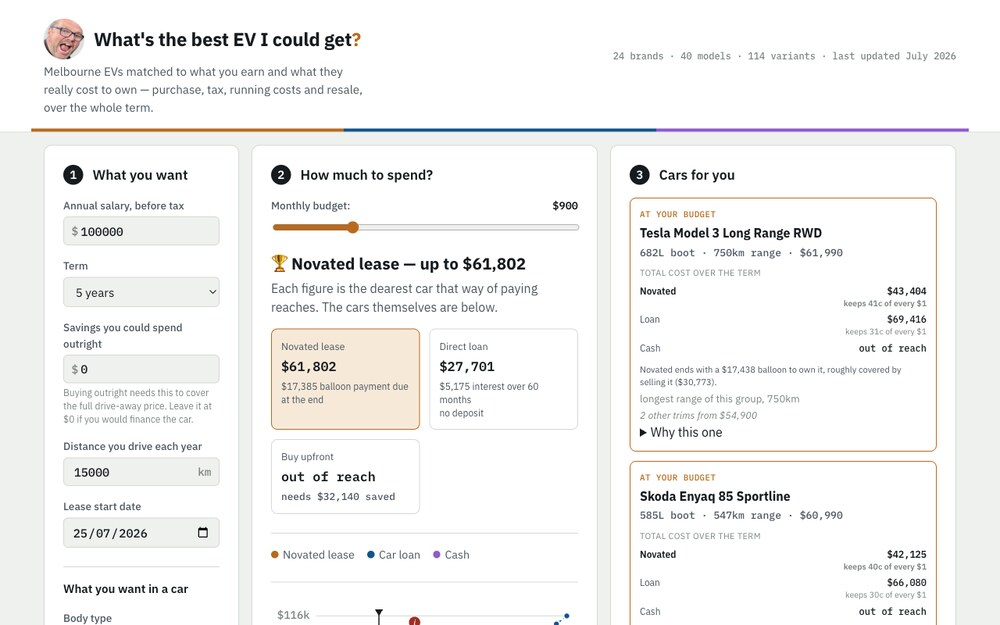
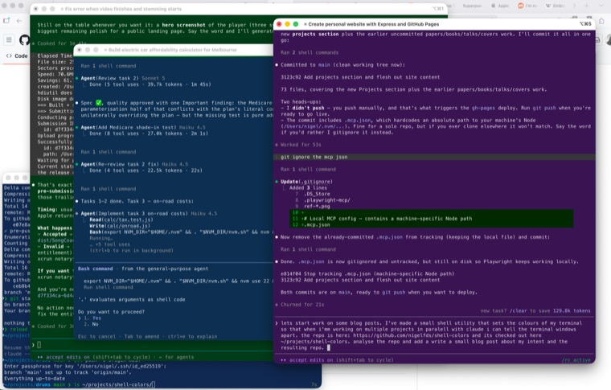

Nigel's
Attempted thought.
Welcome to my corner of the web — a place where I keep what I'm working on, the things I read, and the occasional written thought. A collection of stuff that may or may not be interesting.
I'm Nigel Fernandes, a software engineer, husband, and dad. Sometimes I make stuff from wood, play instruments to make music and design games for kids.
Latest.
The most recent things I've written or built.
-

CarCalc can now compare cars side by side A new Compare tab in CarCalc puts up to three EVs head to head on specs alone — price, practicality, energy and ownership — with the best in each row marked, and a link you can share. -

SongCoach v1.1.0 — capture a whole playlist, hands-free The second SongCoach release adds an Apple Music mode that auto-captures a playlist song by song, plus library search, delete, and export/import. -
 CarCalc — how much electric car can you actually afford?
A Melbourne EV calculator that models novated lease vs loan vs cash, with running costs, insurance and resale for real cars baked in. No email required.
CarCalc — how much electric car can you actually afford?
A Melbourne EV calculator that models novated lease vs loan vs cash, with running costs, insurance and resale for real cars baked in. No email required.
-

SongCoach — pulling the drums out of any song A local macOS app that isolates the drum track from any song so you can learn it, then play along to the backing track. The first release is out. -

CarCalc A Melbourne EV calculator that compares novated lease, loan and cash — no email required. -

A colour per project A tiny zsh utility that tints each terminal a stable colour per project, so parallel Claude Code sessions stop blurring together. -
 SongCoach
A local macOS app that isolates the drums from any song so you can learn it, then play along.
SongCoach
A local macOS app that isolates the drums from any song so you can learn it, then play along.
-
 DrumCoach
An app that listens to you drum and coaches your timing.
DrumCoach
An app that listens to you drum and coaches your timing.
-
 Spell to Fly
A geography game where you fly the map by spelling city names.
Spell to Fly
A geography game where you fly the map by spelling city names.
-
 MathGrid
A real-time multiplayer arithmetic race on a shared grid.
MathGrid
A real-time multiplayer arithmetic race on a shared grid.
-
 Spelling Bee
A hangman-style spelling game for kids, built hands-off with Claude Code.
Spelling Bee
A hangman-style spelling game for kids, built hands-off with Claude Code.